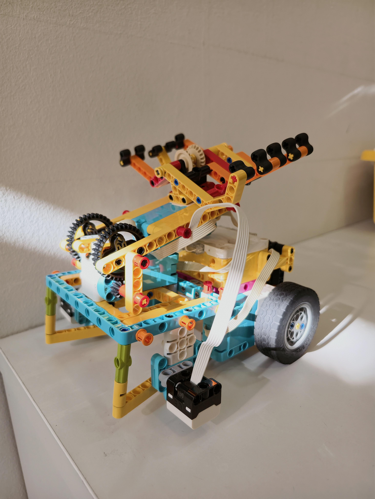
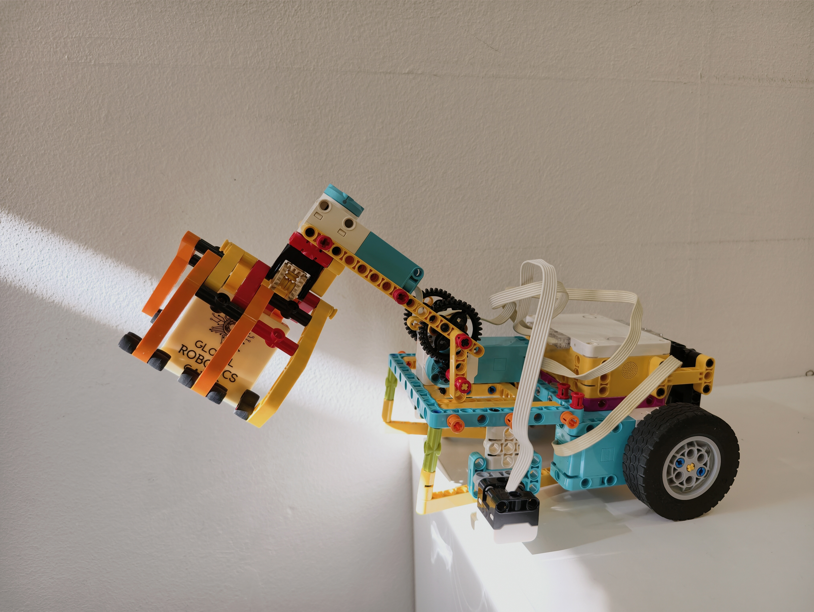

Robotics Coaching · NRC 2026
I mentored three teams — all three qualified for the Global Robotics Games (GRG), and two brought home awards, including
2nd Place Best Robot Performance.
LEGO SPIKE Prime chassis designed and built by me.


Presentation scripts prepared with each team for the competition.
Slide decks used for the NRC 2026 presentation.
A custom Pybricks framework I designed and taught: PID gyro control, line-follow, black-line detection, smooth acceleration, and reusable competition functions.
from pybricks.hubs import PrimeHub
from pybricks.pupdevices import Motor, ColorSensor
from pybricks.tools import StopWatch
# Robot Configuration
Hub = PrimeHub()
LeftWheel = Motor(Port.F)
RightWheel = Motor(Port.B)
# PID Movement Control
MoveProportionalGain = 1
MoveDerivativeGain = 0.5
def Gyro(Facing, Speed):
Error = HeadingError(Facing)
Correction = Error * GyroProportionalGain \
+ (Error - LastError) * GyroDerivativeGain
LeftWheel.dc(LimitPower(-Speed - Correction))
RightWheel.dc(LimitPower(Speed - Correction))
# Smooth acceleration & deceleration
def RampPower(TargetPower, CurrentDegrees, TotalDegrees):
...
# Gyroscope driving
def GyroDegrees(Facing=0, Speed=80, Degrees=360):
...
# PID Line Following
def LineFollowDegrees(
SensorPort=Port.C,
Speed=50,
Degrees=360,
Kp=1.2,
Kd=8):
...
# Automatic black-line detection
def DriveUntilEitherBlack(
Facing=0,
Speed=25):
...
# Robot alignment
def SquareOnBlackLine():
...
# Complete checkpoint navigation
def BlackLineCheckpoint():
...